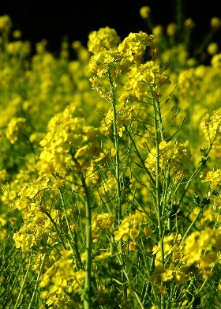

ナノハナ
基本データ
- 日本名：なのはな（菜の花）
- 科目 ：アブラナ科
- 学名 ：Brassica rapa var. amplexicaulis
| 生息地 | 畑、川岸、道端、草地 | |
| 大きさ | 30～100cm | |
| 花の咲く時期 | 3～5月 | |
| 花の色 | 黄色 | |
| 花びらの枚数・形 | 4枚 |
アブラナ科アブナラ属の総称をナノハナと呼んでいる。道端に咲いているのはセイヨウアブラナとセイヨウカラシナであることが多い。種は菜種油の原料になる。セイヨウアブラナは花がかたまって咲き、セイヨウカラシナは茎にパラパラと棒状に咲く。
撮影場所：神奈川県松田西平畑公園